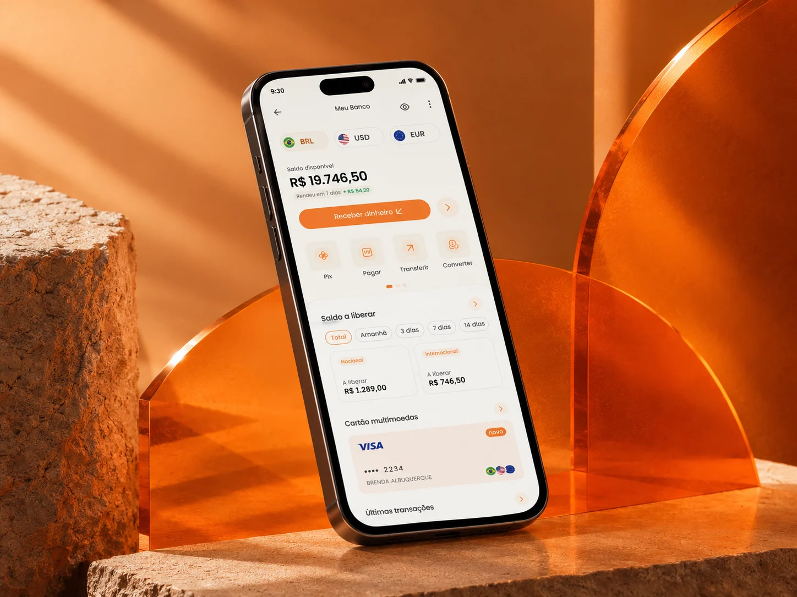
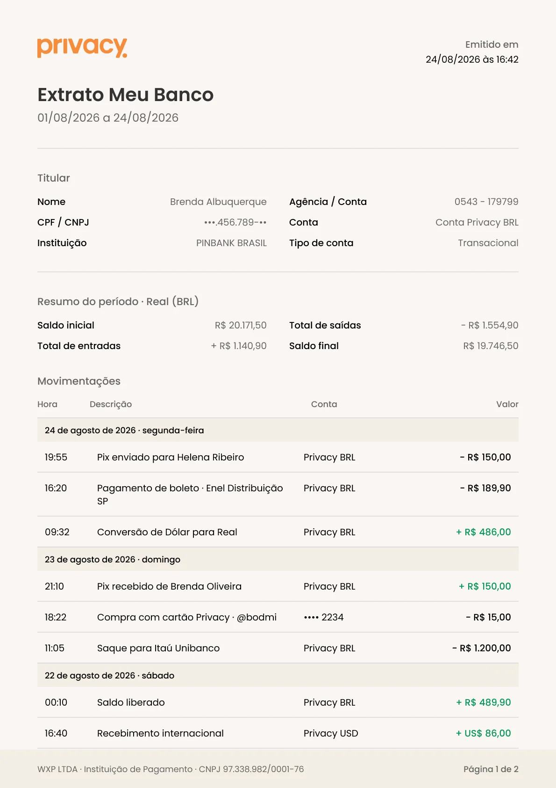
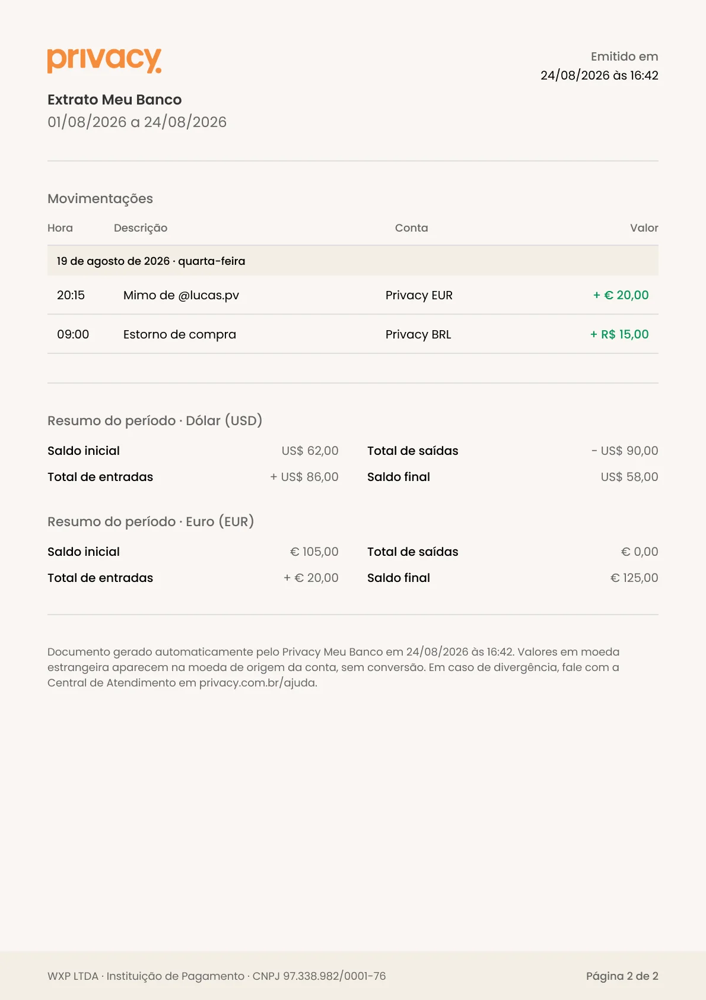

Design System opedro.
Sistema autoral com 34 componentes em três temas, construído sobre o manual de marca com Material 3 como referência.
Product Design · Mobile · 2026
Uma experiência financeira pensada para criadoras de conteúdo: simples, guiada e familiar, do primeiro acesso ao uso diário.

01Contexto
Até aqui, a carteira da Privacy funcionava como um botão de saque: a criadora acumulava o que faturava na plataforma e transferia para outro lugar. No momento do saque, a relação financeira dela com a Privacy terminava.
A proposta foi inverter essa lógica. A carteira vira uma conta multi-moeda de uso diário, operada por uma parceira financeira regulada: receber, pagar, transferir, converter entre real, dólar e euro e usar um cartão. O saque deixa de ser o fim e passa a ser só mais uma opção.
02Como pensamos
Partimos de tudo o que já sabíamos sobre as criadoras: elas querem fluxos simples, sem complexidade, conduzidos passo a passo. E, acima de tudo, querem que mexer com dinheiro aqui seja parecido com o que já fazem no app que usam todo dia.
O benchmark foi feito com os apps mais usados pela nossa base, olhando nossos próprios celulares. O Nubank, o mais presente entre as criadoras, foi a principal comparação; o Itaú foi a principal referência de usabilidade.
Uma decisão por tela. O valor entra pelo teclado numérico, o saldo disponível aparece logo abaixo e o botão só acende quando dá para seguir.
Cada fluxo explica o que vai acontecer antes de acontecer: ajuda no campo, revisão antes de enviar, linha do tempo da transferência e comprovante no fim.
Área Pix com os mesmos atalhos, chaves e portabilidade no padrão do mercado, extrato com busca e filtros. Ela não precisa aprender nada.
03Escopo e decisões
Participei das reuniões que definiram escopo, prioridade e complexidade de cada fluxo, e das conversas com fornecedores para entender o que era viável na primeira versão. Desenhamos a experiência completa, mesmo sabendo que nem tudo iria ao ar de uma vez.
Isso virou uma decisão de design: o que ainda não está disponível aparece como promessa clara, com a opção de ser avisada, nunca como botão quebrado ou tela vazia.
A mesma home funciona no primeiro dia, só com real, e no dia em que dólar, euro e cartão chegam.
04A virada
A criadora já tinha uma carteira e um saldo. A transição precisava avisar antes, apresentar o novo sem jargão e pedir só o que faltava: uma senha de 4 dígitos para as transações, criada no primeiro acesso depois do opt-in.
Aviso na carteira atual, apresentação do novo e criação de senha, com o erro de confirmação já previsto.
05Uma conta, três moedas
Muitas criadoras faturam em mais de um mercado. A home troca de moeda por chips no topo e mantém a mesma estrutura nas três: saldo, ações, saldo a liberar, cartão e últimas transações. As ações mudam conforme a moeda (Pix e boleto só existem em real), mas o lugar de cada coisa não muda.
Toda a mecânica de liquidação fica invisível. Na tela só existem reais, dólares e euros.
06Pix
Pix é onde a criadora mais vai comparar com o app dela. Seguimos o padrão do mercado na área Pix e investimos nos momentos em que ela pode errar: código colado errado, saldo insuficiente, limite de chaves, chave registrada em outra instituição.
Ajuda no próprio campo, erro que diz o que fazer e revisão antes de enviar.
Valor opcional, mensagem para quem paga e um QR pronto para compartilhar.
Configurações que quase ninguém abre, mas que precisam funcionar quando alguém abre.
07Extrato
Busca, filtros por período, tipo e moeda, detalhe de cada transação e comprovante compartilhável. Para exportar, o período já vem herdado do filtro aplicado: quem filtrou agosto quer o PDF de agosto.
Saldos por moeda e movimentações do período, pensado também para a contabilidade de quem é PJ.


08Internacional
Transferir para fora é onde o jargão mais aparece. Cada via é apresentada pelo que importa para a criadora: quanto custa e quando chega. A revisão mostra valor, taxa e total debitado antes do envio, e depois uma linha do tempo acompanha a transferência até o destino.
Destinatário, valor com saldo disponível, revisão e acompanhamento.
O mesmo fluxo para euro via SEPA, e dados de recebimento prontos para copiar.
09Cartão multimoedas
O cartão usa o saldo da moeda da compra. Isso precisava ficar evidente em cada ponto: na ativação, no extrato do cartão, no detalhe de uma compra em dólar com a cotação do dia, e principalmente na compra recusada, que já oferece converter saldo para a moeda que faltou.
Confirmação de dados, senha do cartão, saldos por moeda e o que fazer quando algo dá errado.
Bloqueio reversível, cancelamento com consequência explícita e limites separados por moeda.
10Estados
Em um produto financeiro, cada erro mal explicado vira chamado no suporte e desconfiança. Por isso cada fluxo foi desenhado com seus estados de erro, vazio e espera, sempre dizendo o que aconteceu e qual é a saída.
11Processo
O prazo só fechava com as frentes correndo em paralelo. Do lado do design, muitos fluxos foram construídos diretamente com IA, guiada por mim a partir dos padrões já definidos, e depois refinados à mão até ficarem consistentes entre si.
Reuniões com o lead de design e o PM de payments para definir o que entra, em que ordem e com que complexidade.
Com os padrões de tela definidos, a IA acelerou a produção de fluxos inteiros e de suas variações de estado.
Cada fluxo revisado contra os demais: mesma linguagem, mesmos componentes, mesmos padrões de erro.
12Próximos passos
O produto ainda não está no ar, então não há resultado para mostrar. O que existe é o que vamos observar depois do lançamento para validar as decisões deste case:
Quantas criadoras fazem o opt-in e criam a senha no primeiro acesso.
Quantas passam a receber e pagar por aqui, e não só a sacar.
Quanto do saldo continua na conta depois de liberado.
Onde os fluxos são abandonados e quais erros mais aparecem, para atacar primeiro.
Em dinheiro, familiaridade é uma forma de confiança. A decisão mais importante deste projeto foi não tentar inventar: seguir os padrões que as criadoras já usam e gastar a energia de design onde elas podem errar, onde algo ainda não existe e onde a complexidade precisa sumir.
Sistema autoral com 34 componentes em três temas, construído sobre o manual de marca com Material 3 como referência.
Navegação por categorias do app reestruturada a partir de avaliação heurística e benchmarking com 5 players.
Chat entre creator e fã alinhado aos padrões mobile, com toolbar compacta e menos fricção no envio.